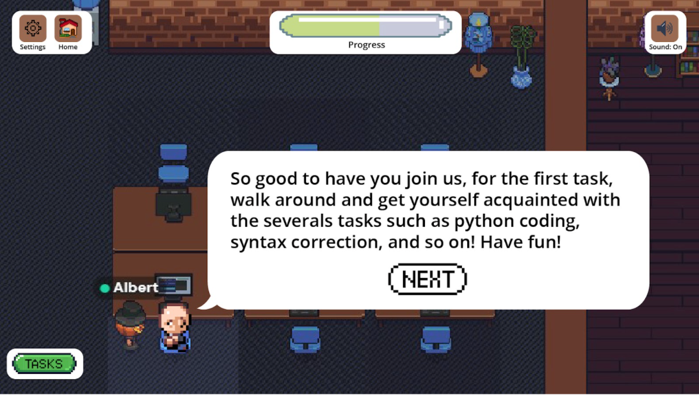
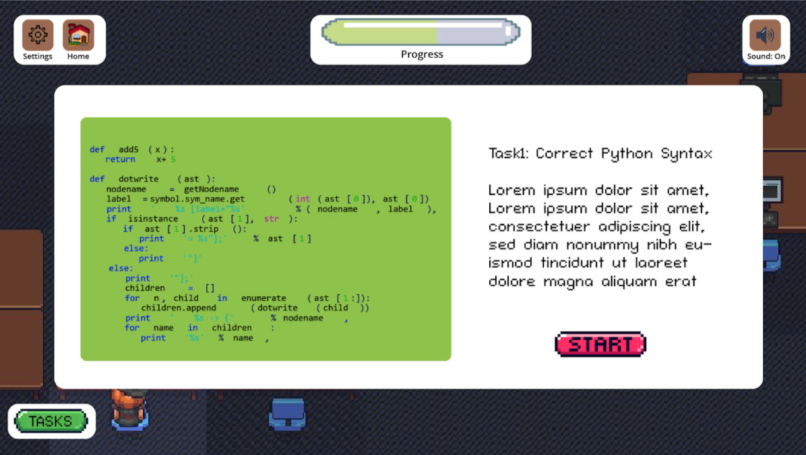

Due to the time limits, our group has to redefine the scope and reduce the number of characters, interactions, industries, jobs, and tasks to create the finished product on time. Instead of making high-quality 3D games, we will stick to the basics of 2D games with simple but attractive designs and interactions.
Character and Background designs:
The time limit and lack of skills allow our team to design one character and a basic background. The landing page will include a login account that allows the players to save their unfinished tasks. After logging in, players will enter the software engineer room and they can choose whether to study Python and take a quiz or to find the errors in the report.Figure 4: Main menu of our game project (designed by Vu Le, 2021)
Figure 5: Software Engineering room (designed by Vu Le, 2021)
Figure 6: Correct Python Syntax (designed by Vu Le, 2021)

Figure 7: Game result (designed by Vu Le, 2021)
Interaction:
"A game needs to provide interaction for a player to truly have agency" (Fristoe, 2016). As Fristoe mentioned, there are 3 types of interaction: game-player interaction, game-game interaction, and player-player interaction. Our group can only generate the game-player interaction, such as the character’s movements and the game’s reaction to the player’s choices. We also create a non-player character (NPC) to assign the Python tasks and give instructions to players.
Music:
Music is also an important element in attracting players. The music and soundtrack of this game will be soft and melodious, helping players relax and concentrate on doing the tasks. For the quiz, there will be an incorrect sound effect when the players choose the wrong answers, and the correct sound if they answer correctly.